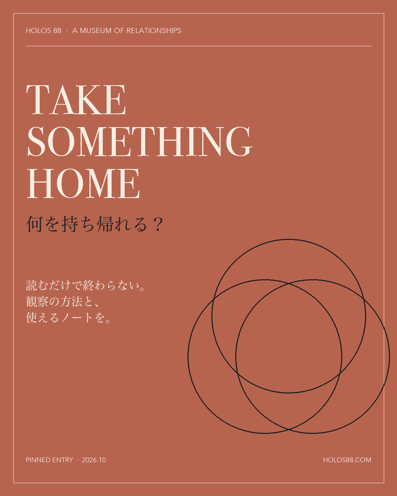
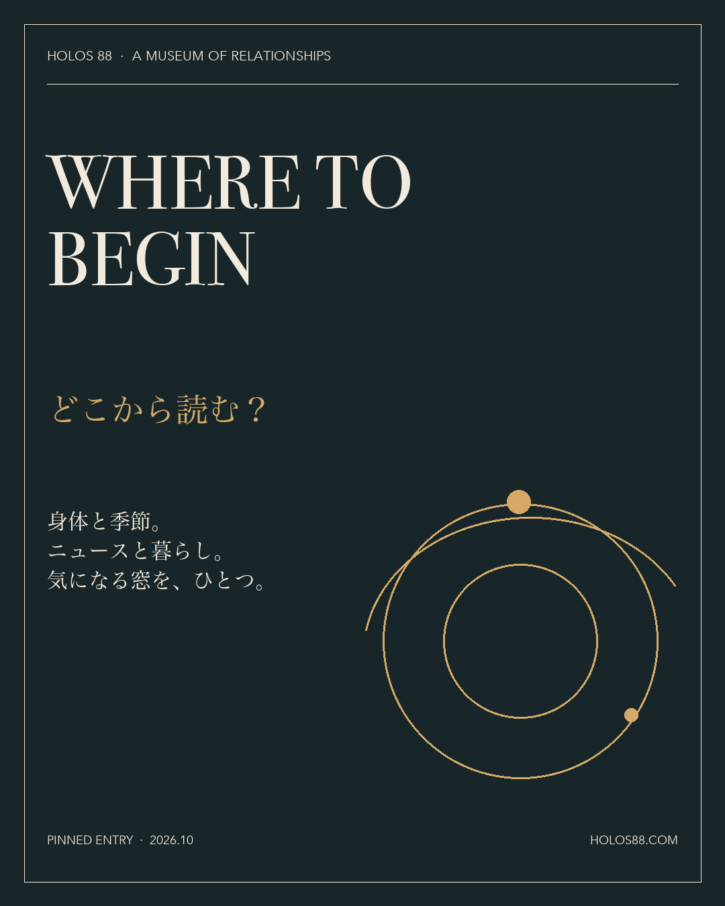
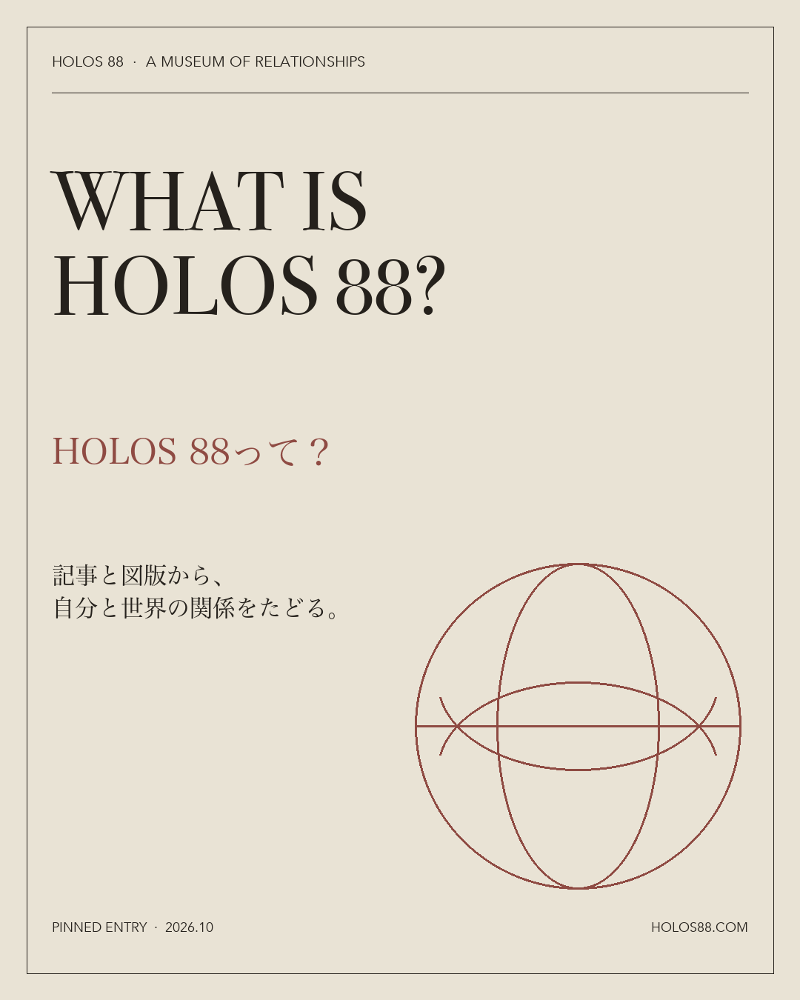

ECHO & MUSEUM
無料記事と図版からHOLOSの読み方を知る入口。
最初の一列は、HOLOS 88へ初めて来た人の入口です。完成時の見え方は、左から「持ち帰る」「読む」「HOLOSとは」。投稿は逆順で、右、中央、左の順に行います。



三枚が揃った後、プロフィールの実画面で並びを確認してから一枚ずつ固定します。
無料記事と図版からHOLOSの読み方を知る入口。
身体と季節の深い版。印刷して使える七日間の観察ノートへ。
ニュースを暮らしへ戻して読む深い版。創刊サンプルは全文公開中。